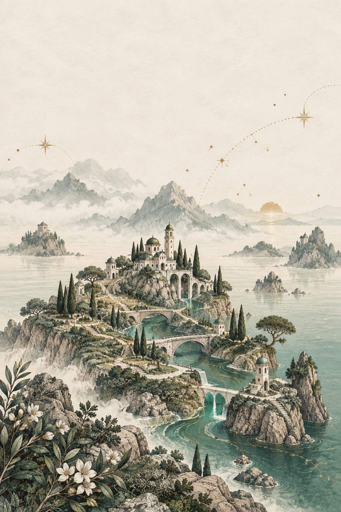

☍ Euler Yolları & Çizge Teorisi☍ Eulerian Paths & Graph Theory
Matematik ve Mantık. Tek Bir Çizgide.One Line Math Game.
Her çizgiden yalnızca bir kez geçerek kesintisiz bir rota bul. İleri matematik gerekmez; 12 resimli bölgede 1.200 el yapımı bulmaca ile zihnini sakinleştir ve bağlantıları keşfet.Find a continuous route through every line exactly once. No complex calculations needed: explore 1,200 offline puzzles across 12 illustrated regions at your own pace.
12 Bölge · 1.200 Bulmaca · Çizge Teorisi12 Regions · 1,200 Puzzles · Graph Theory
Çizgilerin Atlası: Kesintisiz Bir Rota.Atlas of Lines: A Seamless Journey.
Basit şekillerden oklar, numaralı yollar, anahtarlar, kapılar ve köprülere uzanan 12 bölgede ilerle. Her bölgede 75 bulmaca çözerek sıradakini aç. Her on keşif resimli atlasının yeni bir katmanını ortaya çıkarır.Journey through 12 chapters of offline puzzles. Start with simple shapes, then discover directional arrows, numbered paths, keys, gates, and bridges. Complete 75 puzzles to open the next chapter and reveal your illustrated world.

Her bölge görsel düşünmeyi, Euler bağlantılarını ve sakin mantık adımlarını keşfetmenizi sağlar.Each region invites visual problem-solving, Euler paths, and quiet contemplation.
01
Euler Yolları & Çizge MantığıEuler Paths & Graph Theory
Tek kural, zengin çözümler. Her çizgiden yalnızca bir kez geçerek tüm tahtayı birleştir. Noktalara tekrar uğrayabilir, parmağını sürükleyerek veya noktalara dokunarak ilerleyebilirsin.A simple rule with thoughtful puzzles. Revisit dots, connect the continuous path, and turn mathematical graph theory into a visual, satisfying challenge.
Basit şekillerden tek yönlü oklara, anahtarlı kapılara ve çift yönlü köprülere uzanan zengin mekanikler. İpucusuz çözümlerle ustalık mührü kazan.Progress from simple outlines to one-way arrows, numbered tracks, keys, and bridge crossings. Solve without hints to earn mastery seals.
03
Günlük Mantık Molası & Serbest AkışDaily Logic Trio & Free Flow
Kolaydan karmaşığa üç günlük bulmaca. 90 günlük arşivde kendi temponuzda gezinin, beğendiğiniz bir bölümü yeniden çözün veya Serbest Akış ile dinlenin.Enjoy three daily puzzles from gentle to intricate. Explore a 90-day archive at your leisure, replay favorite challenges, or relax in Free Flow mode.
04
Çevrimdışı, Güvenli & İsteğe Bağlı ProOffline, Private & Optional Pro
Süre veya enerji sınırı yok. İlerleme yalnızca cihazınızda saklanır, hesap gerekmez. Tüm bulmacalar ücretsizdir; isteğe bağlı tek seferlik Pro reklamları kaldırır.No timers or energy limits. Progress stays on your device without account barriers. All puzzles are free; optional one-time Pro removes ads and unlocks all ink colors.